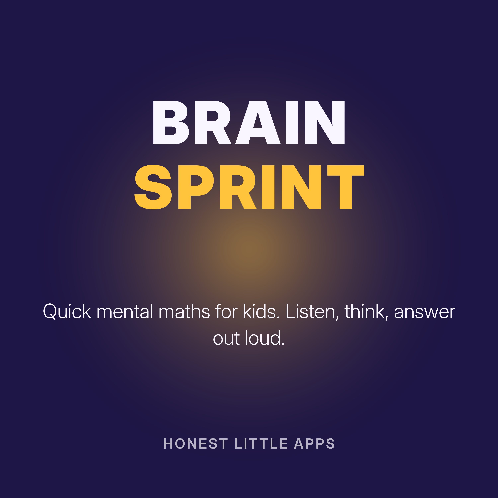

Brain Sprint: Read-Along Maths for Kids
Quick mental maths for kids, about two minutes per episode. A friendly voice asks ten questions, pauses so your child can answer out loud, then gives the answer. Great for the car, breakfast or the walk to school. Episodes go from adding within ten up to times tables.
Made by Honest Little Apps, the makers of Brainy Bucks: Math & Reading, a kids' learning app with a free daily quest, no ads and no accounts. Narrated with a synthetic (text-to-speech) voice.
- Level 1: Adding within tenWhat is 3 plus 2?
- Level 2: Taking away within tenWhat is 9 take away 2?
- Level 3: Make tenWhat goes with 7 to make ten?
- Level 4: DoublesWhat is double 4?
- Level 5: Adding within twentyWhat is 10 plus 5?
- Level 6: Times tables: twos, fives and tensWhat is 2 times 5?
- Level 7: Times tables: threes and foursWhat is 6 times 4?